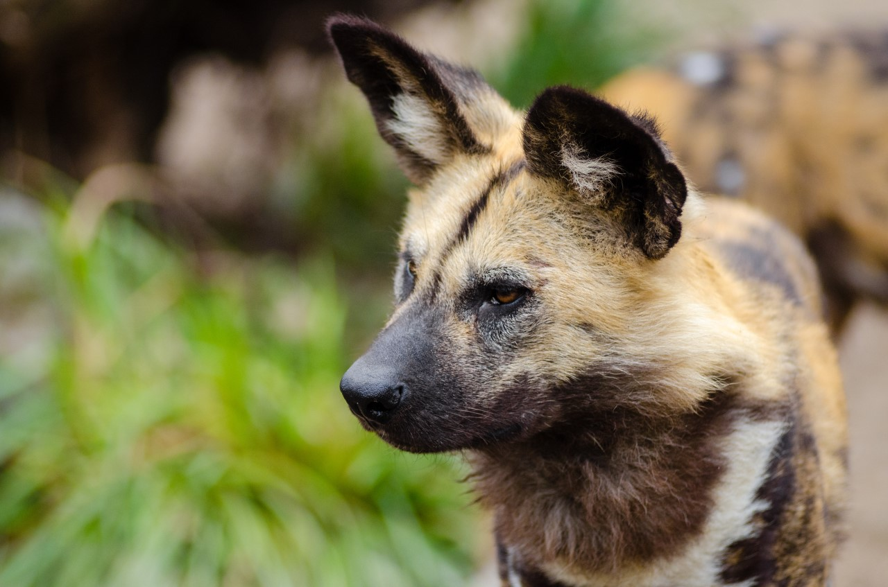
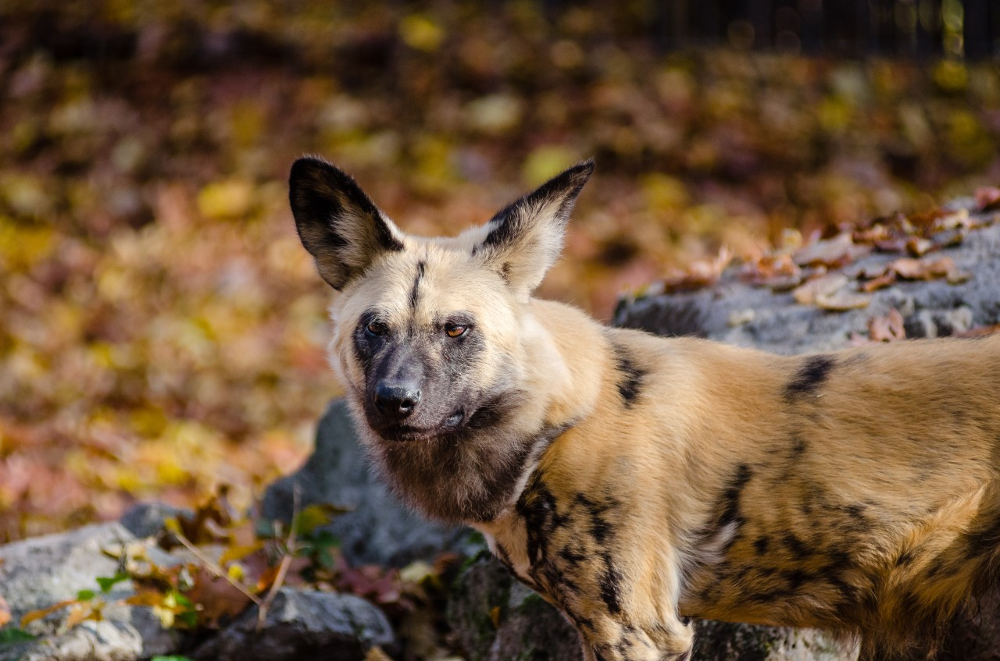
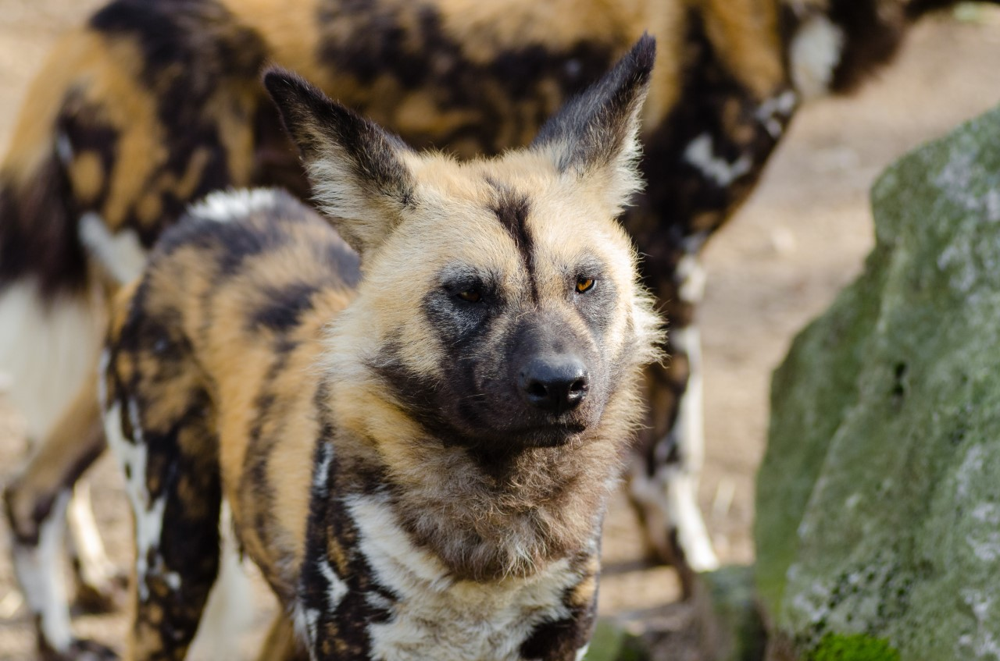
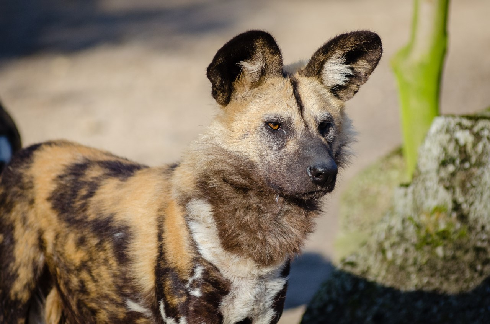
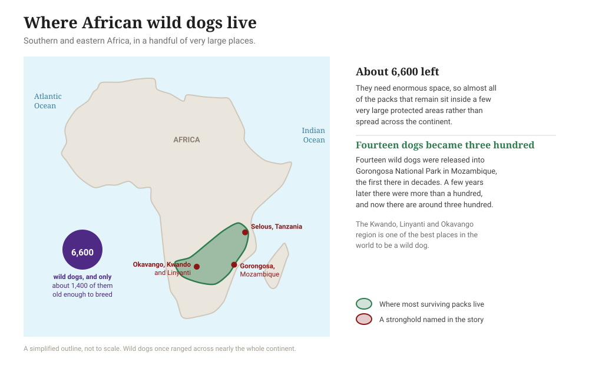

African Wild Dog
Open the African Wild Dog section
Mina the African Wild Dog
Hi, I am an African wild dog and my name is Mina. I live in a pack with my mother, my father, me, and my two sisters (Melinie and Elle), and ten other wild dogs. Our leader is a female dog named Aliana. We are always hiding and running. We sometimes have to starve! We are losing our food because the animals we hunt are losing their habitat. We are carnivores, which means we eat meat. We hunt animals like antelopes and wildebeests. We don't see many packs in Africa. Hunters come and kill some of the packs, or the packs lose their habitat. Mama always tells me that we have to believe in ourselves and keep going. We are one of the only species that cares for the old, the sick, and the injured, because for us family is family. There are only about 6,600 wild dogs left in the wild. If we go extinct, then there will be no dog left with only four toes on its front feet! Every other dog has five, so we are one of a kind. We live for about 10 or 11 years and weigh from 44 to 66 pounds! We are only found in Africa. We live in packs with an average of 10 members. One litter can have as many as 16 puppies! The pups get to eat before the alpha. We also are not picky eaters. We eat almost anything! We are in competition for food with lions because we both eat just about the same things. We are one of the most endangered animals in the world!
There are only about 6,600 wild dogs like me left. To tell the truth, I am really scared. What if a hunter got my pack? What if we could not find enough food and we starved to death? What if we caught one of the bad diseases? I want some miracle to save us! Mama says we have to be our own miracle. Mama is always correct. One day we were walking through the woods when I saw something shiny. "Stop!" I barked. Everyone stopped, and I told them to avoid the trap. They all listened, and then we heard barking and voices, and then a buzzing sound filled the air along with the smell of cut wood. We ran fast down the stretch of forest around the city. We hurried to find another safe forest before it got dark. We finally reached another forest, but it was dark outside, so we would have to make a temporary den. Mama told me and my two sisters that we had to take care of one another while they were gone. So we huddled together and cuddled while Mama and Papa scouted with the rest of the pack. We were starting to get restless, and since we were all bored, we just talked. The adults came back, and they found a patch of grass, and then they made the den. We cuddled up and slept. In two weeks we would leave this pack and start our own great packs! I want to be a pack leader, but Mama says it is hard work, so I have to try hard. Aliana teaches us how to hunt in the morning, and I am the best!
Aliana says I will be the best pack member ever, and I smile. She also pulls me aside and tells me I might become the pack leader. "Ding, help!" Aliana cries out. "I am stuck!" I jump up to see what's wrong, and I see that it is only a net, so I bite the net to save her. I am glad she is okay. We hurry back to the camp, where my siblings ask if I am okay. I just nod. I think about how close that was! "Dinner!" Aliana's voice rings through the trees. We bolt off in search of food, and we split up at the bend. Then, around a tree, I spot a wildebeest! I smile. Aliana will be proud. I bark to the pack, which comes, and we chase our prey. Finally the wildebeest gets tired and slows down, letting us catch up. We capture our prey and feast! Aliana is very proud of me.
We then hear voices. We all expect to hear the buzz of the saw, but this time we hear something different, something worse. "Bam, bam, bam!" The bullets are big and black, flying over our heads. We run. The hunters chase our pack, aiming at us. Aliana barks and tells some of us to slack behind and go under their legs and run. She tells the rest of them to slack behind but go around them. We thankfully escape. The hunters are close on our tails, literally! We go into a cave, and they pass by. We run the other way, and finally we reach home. I am more scared than ever. We go to bed, but tonight I wake up. I crawl over to Mama and Papa and snuggle in between them. I sleep peacefully for the rest of the night. In the morning we dart around our den and hide, waiting for breakfast to visit us, but none comes. "We won't get breakfast today," announces Aliana. "Awww," we all cry.
"Well," says Mama, "the hunters are killing all of them!" She continues, "We won't survive long like this." Mama looks worried. I cuddle closer to her. She goes on, "This forest has no food. I think..." She does not look happy about what she is going to say. "I think we have to..." She trails off. I know she cannot finish the sentence, but before I can finish it for her, Aliana does. "Leave," she says. I know.
We left the den, but shortly after, we heard voices. "Not again!" my two sisters and I whined, and we rolled on the ground. "Get up and stop whining," Mama ordered. "Get up and run, get up and hide." She sounded mad, but not at us. She was mad at the hunters. "Wait," I said. "They don't want us. They want some other animal called a painted hunter. We are not painted, and no animal here is painted, so we should help them." I started to trot off, but Mama grabbed my tail. "No," she said. "We are the painted hunters." "We just have two names," added Papa. "Plus," agreed Mama, "humans have no mercy on us. To them we don't look cute at all." But they say all dogs are cute! My siblings are cute! "Come, my darling," said Aliana. "Your mother is right. Let me tell you a secret. Only alpha dogs have puppies, but your mother acted so much like a mother to you that she let you call her Mom." "Oh," I said. "She loves me a lot, and I don't want to leave my pack and start my own pack." "You must," Aliana replied. "Let's join the others." We ran with the pack, and we marked our territory, and we slept in the den. I crawled once again in between Mama and Papa. This time, though, Mama sat up and curled around me, snuggling me tight. "Good night, Mina," she whispered softly into my ear. "You are my adorable."
My pack lived until the very end, and so did Aliana's. But what about our whole species? This next part makes me wag my tail. In a place called Gorongosa, in Mozambique, there were no wild dogs at all for a very long time. Then people brought fourteen of us back, and after that a few more packs to keep them company, and everybody had so many puppies that in a few years there were more than a hundred, and now there are around three hundred! People have brought us back to Majete and Liwonde in Malawi too, and to reserves in South Africa. In Botswana and Zimbabwe and Zambia and Namibia there are still big packs running free, and the biggest group of us anywhere lives in a place in Tanzania called Selous, and there are people who help farmers keep their cows safe so that nobody has a reason to hurt us. So we are still here, and we do not have to disappear. Mama says we have to be our own miracle, and she is always correct. You can be one of our miracles too. Will you help save our species?
Fun facts




Here are some fun facts about African wild dogs!
- These dogs are one of the few animals that take care of the old, the sick, and the injured.
- African wild dogs are the only dogs with four toes on their front feet. Every other dog has five!
- The African wild dog's scientific name is Lycaon pictus!
- African wild dogs have many names, including painted dogs, painted hunters, and painted wolves. These are all referring to their coats, because the coats have splotches of red, brown, black, white, and gray! No two coats are the same.
- The pups get to eat before the alpha!
- A litter can have as many as 16 pups.
- All pack members take care of the old, the sick, the injured, and the young!
- These dogs are very social and live in a pack with an average of 10 members.
- These animals nest in a different place each night, unless they have a newborn litter.
- These dogs catch their prey by chasing it until it gets too tired to run, and then these fierce dogs eat it!
Where they live
These dogs live in Africa. Most of them live in southern and eastern Africa, in Botswana, Zimbabwe, Zambia and Namibia, and the biggest single group of all lives in the Selous area of Tanzania. They are gone from most of the rest of the continent, which is why the map below highlights only the part they still hold.

How many are left?
The good news
There are only about 6,600 African wild dogs left, and scientists say only about 1,400 of those are fully grown adults that can have puppies. That is why the IUCN calls us Endangered. Nobody can say a date when we will all be gone, and I am glad, because that is not how it works. Numbers can go up too, and ours have. The Kwando, Linyanti, and Okavango region in southern Africa is one of the best places in the world to be a wild dog, and people are putting us back in places we had disappeared from. Fourteen of us were released into Gorongosa National Park in Mozambique, the first wild dogs there in decades, and more packs were brought in after them. A few years later there were over a hundred, and now there are around three hundred. That is what happens when people decide to help.
How you can help
You can help! Here is what actually works for wild dogs.
- Support snare removal patrols. Wire snares set for antelope are one of the biggest killers of wild dogs, and teams that walk the bush pulling them out save whole packs.
- Get your dog vaccinated. Rabies from village dogs has wiped out entire wild dog packs, including one in Kenya that lost 21 of its 23 members in six weeks. Vaccinating dogs that live near wild dog country is one of the clearest wins there is.
- Wild dogs get shot for kills they did not make. People blame them for livestock taken by hyenas and leopards, so groups that help farmers protect their herds cut down the revenge killing aimed at the wrong animal.
- Tell people wild dogs are not pests. A lot of people still call them vermin, and that is where the shooting starts.